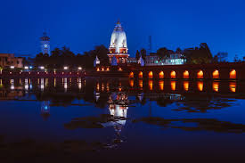

Historical Monuments

1. Jageshwar Temples
Details: A group of ancient temples dedicated to Lord Shiva, set amidst scenic surroundings.

2. Rani Pokhri
Details: A historic pond and temple site in the city of Dehradun, known for its serene beauty.